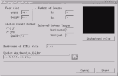
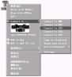
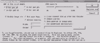
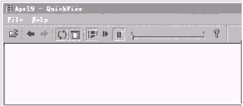
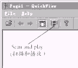

|
|
| 当前位置：电脑报电子版 > 1999 年 > 40 期 > 软件世界 > 批量图像格式转换工具——Image Converter |
| 《 批量图像格式转换工具——Image Converter 》 |
| 经常与各种电脑图像打交道的朋友们，你用过Image Converter 29吗？这是个图像转换和处理的利器，可以帮助你处理各种图像，将图像玩转于股掌之上。Image
Converter下载地址为http:∥wwwfcodercom/Converterzip，下载文件大小约14M。 Image Converter目前最新版本是29，小巧、快速、简单是其最大的特点，同时它还拥有其他大型图像处理软件所不具备的强大功能。具体来说，它的主要功能和特点有： 转换图像格式。Image Converter能方便、快捷地将BMP、GIF、JPG、TGA、TIF等常用的图像格式进行相互转换。 支持图像预览。你可以在鼠标右键的弹出菜单中以小图的形式快速地浏览图像，迅速知道图像文件的格式、图像尺寸的大小、图像使用的颜色数等信息。 压缩图像文件。自设定JPG图像压缩后的图像质量，控制JPG图像的压缩比率，达到减少图像磁盘空间占用的目的。 支持图像批量转换。你可以选择很多的图像，一次转换成指定的格式，图像转换快速、便捷。 与操作系统紧密集成。你在应用Image Converter软件时，无须先运行它，只要用鼠标右键单击图像，即可在右键弹出菜单中见到它的各个选项，进而实现各种功能。 Image Converter安装非常简单，从网上下载该软件后，用Winzip软件将下载文件converterzip解压缩后，它将自动进入安装程序界面，在你确定文件安装目录后，一路“确定”或“NEXT”就可搞定。 图像处理和转换 使用Image Converter时，无须事先运行它，用鼠标右键单击你要处理的图像文件，就会出现如图1所示的界面，其中的Convert to项和其下的预览小图就是安装Image Converter软件后，在你Win98的右键弹出菜单中增加的选项，下面，我就把它的各个选项的作用加以说明。1Convert to BMP、Convert to GIF、Convert to JPG、Convert to TGA、Convert to TIF五个选项能分别把你指定的图像文件转换为BMP、GIF、JPG、TGA、TIF等图像文件格式，转换图像格式时，转换成的图像文件保存在当前的目录内，遇到相同文件名，它会自动的在文件名后加上(1)、(2)进行区分。 2Copy to clipboard选项能把当前指定的图像文件复制到Windows的剪贴板，供你在别的应用程序中粘贴。 3Image page wizard选项是一个比较特别的功能，它可以让你一次选择很多的图片，然后把你的图片每12张缩小集合到一系列的Page1jpg、Page2jpg、Page3jpg等图像文件中，在形成的图像文件中，还会显示出每张图片的文件名，让你方便地浏览和管理你所有的图片。当你选择多个图像文件并选择该选项后，将出现如图2的对话框。 你可在该对话框中设定图像文件的大小、每行每列图像的数目、图像之间的间距、图像的格式和质量、形成的图像集合文件的名称、图像集合文件存盘的路径等参数，然后点击“Start”就可完成全过程了。 4Set as wallpaper选项可以让你把当前图像设置为你的桌面墙纸，其中还包括居中、平铺、自适应桌面、自适应屏幕等选项，与Windows的桌面墙纸设定差不多。 5Settings选项选中后，将出现如图3的对话框： 你可以设定BMP→TGA格式转换的图像位数(有8、16、24、32bit四种)、可以调整图片的尺寸大小、设定JPG格式的压缩比率等等。 图像预览 另外你看见Windows右键菜单中的预览小图了吗，它下面的参数会告诉你该图片的格式、尺寸大小、图像位数等信息，另外，当你用鼠标左键单击该预览小图时，还将调出Image Converter中附加的一个叫Quick View的小工具，这个小工具可以单独显示一张图片或让你的图片像幻灯片一样的自动播放，可以调整播放幻灯片的速度、设定循环播放等。要以幻灯形式播放时，需点击如图4所示的Scan and play（扫描和播放）按钮，在接下来的对话框中指定你要浏览和播放的图像文件的路径，就会出现如图5的界面。通过向前、向后、循环、播放、暂停等按钮，你就可以方便地浏览和控制播放指定文件夹内的图像，还可拖动右边的滑动条来改变幻灯播放的速度。 Image Converter是一个共享软件，未注册的试用版中，会偶而出现提醒你注册的讯息，但不影响其使用。 通过以上的介绍，相信大家对Image Converter 29的功能和特点已经有了一个全面的了解，那还等什么呢！快去把它Down下来用吧！ (云南 陈昌明) |
| 下载本期推荐软件 | 页 首 |
| 《电脑报》版权所有，电脑报网站编辑部设计制作发布 |